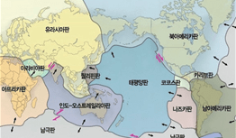
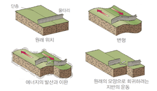
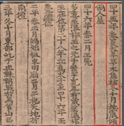
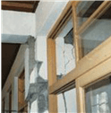

지진
지진의 발생원인
우리나라는 판 내부에 위치하고 있어 판 경계부에 비해 상대적으로 지진의 발생빈도가 낮고 재발주기가 길다.
하지만 지질 구조상 지각이 약한 단층구조가 존재하기 때문에 주변국에서 발생하는 지진에 영향을 받아 발생빈도가 증가하고 있다.
- 판구조론(Plate Tectonics Theory)
- 지구표면을 구성하는 판들이 수평으로 이동할 때 판 경계에서 에너지가 방출되어 지진이 발생한다는 이론
- 탄성반발설(Elastic Rebound Theory)
- 지각에 의해 변형이 발생하면 탄성에너지를 축적하다 순간적으로 파괴되어 에너지 방출이 일어나면서 지진이 발생한다는 이론
-

<판구조론>
-

<탄성반발설>
지진의 규모와 진도
지진에 대하여 지진에너지를 표현하는 규모는 여러 지역에서 동일한 수치이지만 진도는 지질구조, 구조물의 형태 및 진앙으로부터 거리에 따라 차이가 발생할 수 있다.
- 규모(Magnitude)
- 지진계에 기록된 지진파의 진폭을 이용하여 발생한 지진에너지의 양을 수치로 환산한 것으로서 특정 장소와 관계없는 절대적인 개념의 크기
- ※ 규모는 아라비아 숫자로 소수점 첫째 자리까지 표기(예 : 규모 5.8, M 5.8)
- 진도(Intensity)
- 어떤 장소에서 사람이 느끼는 감각, 주변의 물체, 구조물 및 자연계에 대한 영향을 등급별로 분류시킨 상대적 개념의 크기
- ※ 우리나라는 12등급의 수정메르칼리 진도(MMI)를 사용하고, 로마숫자 표기(예 : 진도 Ⅳ)
지진으로 인한 피해 유형
지진은 해일·산사태·화재·수도 및 가스, 전기 등 공공인프라 마비·시설파괴 및 인명피해·국가경제 타격 등 여러 가지 복합적 피해를 초래한다.
따라서 사전에 철저한 대비를 통한 피해예방과 재난발생 시 대응과 복구를 위한 역량을 집중할 필요가 있다.
- 물리적 피해
-
- 건물 붕괴, 시설물의 파괴 및 낙하물에 의한 인명 및 재산 피해
- 지진해일(쓰나미), 화재 및 유해물질 누출 등 2차 피해
- 사회기반시설의 기능 상실로 인한 지역 및 산업 전반에 걸친 중장기 피해
- 사회적 현상
-
- 지진충격에 의한 사회기능 마비 및 혼란 발생
- 교통마비 및 통신두절로 인한 불안감 증가
- 정전 및 단수로 인한 생활 불편 확대
대표적인 지진피해 사례
국내에서는 지진계를 최초로 설치한 1905년을 기준으로 역사지진과 계기지진으로 분류하고 있다. 역사지진 기록은 삼국사기, 고려사, 조선왕조실록 등의 문헌에서 확인할 수 있고, 계기지진은 국내 지진관측망에 의한 지진관측과 분석기술을 통해 정밀한 감지가 이루어지고 있다. 특히, 9.12 지진은 아날로그 방식(1978~1998년)과 디지털 방식(1999년 이후)으로 지진관측망 확충이 이루어진 이후 발생한 최대 규모 및 진도의 지진으로서 우리나라가 더 이상 지진 안전지대가 아니며, 지진대비를 통한 피해예방의 경각심을 일깨우는 계기가 되었다.
- 국내 지진피해 사례
-
- 백제 온조왕(27) : 지진이 일어나 집이 기울어지고 무너졌다고 삼국사기에 기록
※ 국내 최초의 지진 피해 기록 - 통일신라 혜공왕 15년(779) : 경주에서 발생한 지진으로 백여 명 사망
- 홍성지진(1978, M 5.0) : 건물피해(파손 100여 동, 균열 1,000여 동), 문화재 및 도로파손, 일시 정전 발생
- 9.12 지진(2016, M 5.8) : 6개 시·도, 17개 시·군·구에 건물 및 문화재 피해가 발생하고 이재민 111명, 재산피해 약 110억원 발생
※ 국내 지진관측이래 최대 규모의 지진으로 한옥과 벽돌집에 피해 집중
- 백제 온조왕(27) : 지진이 일어나 집이 기울어지고 무너졌다고 삼국사기에 기록
-

<백제(27)>
-
<통일신라(779)>
-

<홍성지진(1978)>
-
<9.12 지진(2016)>